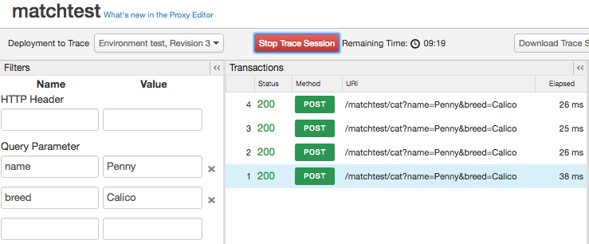
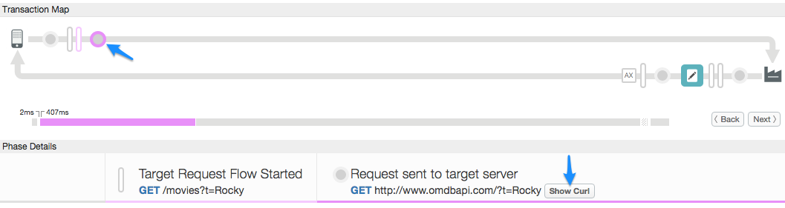

Trace is a tool for troubleshooting and monitoring API proxies running on Apigee Edge. Trace lets you probe the details of each step through an API proxy flow.
Trace is simple to use. You start a trace session, then make an API call to the Edge platform, and read the results.
[[{"type":"media","view_mode":"media_original","fid":"4391","attributes":{"alt":"","class":"media-image","height":"32","typeof":"foaf:Image","width":"118"}}]]
The trace tool has two main parts, the transaction map and the phase details:
Here's a sample trace tool map with the main proxy processing segments labeled:
Trace tool's transaction map
[[{"type":"media","view_mode":"media_original","fid":"4351","attributes":{"alt":"","class":"media-image","height":"463","style":"width: 600px; height: 368px; border-width: 1px; border-style: solid;","typeof":"foaf:Image","width":"755"}}]]
The following table describes the intent of the icons you will see in the transaction map. These icons mark each of the notable processing steps throughout the proxy flow.
Transaction map icons
| [[{"type":"media","view_mode":"media_original","fid":"4451","attributes":{"alt":"","class":"media-image","height":"50","typeof":"foaf:Image","width":"50"}}]] | The client app that sends a request to the ProxyEndpoint of the API proxy. |
| [[{"type":"media","view_mode":"media_original","fid":"4416","attributes":{"alt":"","class":"media-image","height":"35","typeof":"foaf:Image","width":"35"}}]] | The circles mark transitional endpoints in the proxy flow. They are there when a request comes in from the client, when the request goes to the target, when the response comes back from the target, and when the response goes back to the client. |
| [[{"type":"media","view_mode":"media_original","fid":"4406","attributes":{"alt":"","class":"media-image","height":"53","typeof":"foaf:Image","width":"16"}}]] |
The tall bars indicate the beginning of a flow segment in the API proxy flow. Flow segments are: ProxyEndpoint request, TargetEndpoint request, TargetEndpoint response, and ProxyEndpoint response. A segment includes the PreFlow, Conditional Flows, and PostFlow. See http://docs.apigee.com/node/14717 for more information. |
| [[{"type":"media","view_mode":"media_original","fid":"4491","attributes":{"alt":"","class":"media-image","height":"23","typeof":"foaf:Image","width":"21"}}]] |
Indicates that Analytics actions have occurred in the background. |
| [[{"type":"media","view_mode":"media_original","fid":"4426","attributes":{"alt":"","class":"media-image","height":"29","typeof":"foaf:Image","width":"30"}}]] |
A conditional flow that evaluates to true. For an introduction to conditional flows, see http://docs.apigee.com/node/14717. Note that some conditions are Edge-generated. For example, the following is an expression that Edge uses to check if an error occurred in the ProxyEndpoint: ((error.state equals PROXY_REQ_FLOW) or (error.state equals PROXY_RESP_FLOW)) |
| [[{"type":"media","view_mode":"media_original","fid":"4396","attributes":{"alt":"","class":"media-image","height":"29","typeof":"foaf:Image","width":"30"}}]] |
A conditional flow that evaluates to false. For an introduction to conditional flows, see http://docs.apigee.com/node/14717. Note that some conditions are Edge-generated. For example, the following is an expression that Edge uses to check if an error occurred in the TargetEndpoint: (((error.state equals TARGET_REQ_FLOW) or (error.state equals TARGET_RESP_FLOW)) or ((error.state equals REQ_SENT) or (error.state equals RESP_START))) |
|
[[{"type":"media","view_mode":"media_original","fid":"4476","attributes":{"alt":"","class":"media-image","height":"41","typeof":"foaf:Image","width":"41"}}]] [[{"type":"media","view_mode":"media_original","fid":"4481","attributes":{"alt":"","class":"media-image","height":"41","typeof":"foaf:Image","width":"41"}}]] [[{"type":"media","view_mode":"media_original","fid":"4486","attributes":{"alt":"","class":"media-image","height":"41","typeof":"foaf:Image","width":"41"}}]]
|
Polices. Each type of policy has a unique icon. This one is for the AssignMessage policy. These icons let you see where policies are executed in the proper order and if they are successful or not. You can click a policy icon to see the results of its execution and if they are expected or not. For example, you can see if the message was transformed properly or if it is being cached. Properly executing policies are clearly indicated by check-marks. In the case of an error, a red exclamation mark is displayed on the icon. Tip: Pay attention to the tooltip or the time line to see if any policy is taking longer than expected. |
| [[{"type":"media","view_mode":"media_original","fid":"4441","attributes":{"alt":"","class":"media-image","height":"50","typeof":"foaf:Image","width":"50"}}]] | Appears when the backend target is a Node.js application. See http://docs.apigee.com/node/14891. |
| [[{"type":"media","view_mode":"media_original","fid":"4446","attributes":{"alt":"","class":"media-image","height":"50","typeof":"foaf:Image","width":"50"}}]] | The backend target called by the API proxy. |
| [[{"type":"media","view_mode":"media_original","fid":"4411","attributes":{"alt":"","class":"media-image","height":"34","typeof":"foaf:Image","width":"61"}}]] | The time line indicates how long (in milliseconds) that the processing time took to complete. Comparing the elapsed time segments helps you isolate the policies that are taking the longest to execute that are slowing down your API calls. |
| [[{"type":"media","view_mode":"media_original","fid":"4431","attributes":{"alt":"","class":"media-image","height":"35","typeof":"foaf:Image","width":"39"}}]] | The Epsilon indicates a time-span smaller than a millisecond. |
| [[{"type":"media","view_mode":"media_original","fid":"4156","attributes":{"alt":"","class":"media-image","height":"17","typeof":"foaf:Image","width":"17"}}]] |
Disabled. Appears on a policy icon when a policy is disabled. A policy can be disabled with the public API. See http://docs.apigee.com/node/8407. |
| [[{"type":"media","view_mode":"media_original","fid":"4401","attributes":{"alt":"","class":"media-image","height":"17","typeof":"foaf:Image","width":"17"}}]] | Error. Appears on a policy icon when the Policy Step condition evaluates to false (see http://docs.apigee.com/node/14723), or on the RaiseFault policy icon whenever a RaiseFault policy executes. |
| [[{"type":"media","view_mode":"media_original","fid":"4166","attributes":{"alt":"","class":"media-image","height":"17","typeof":"foaf:Image","width":"17"}}]] | Skipped. Appears on a policy icon when the policy was not executed because the step condition evaluated to false. See http://docs.apigee.com/node/14723 for more information. |
The Phase Details part of the tool tells you a lot about the state of your proxy at each processing step. Here are some of the details provided in the Phase Details. Click any icon in the trace tool to see details for the selected step, or use the Next/Back buttons to move from one step to another.
Trace captures message content. If your message payloads contain sensitive information, then you should enable data masking. For instructions, see http://docs.apigee.com/node/15451.
| Phase Detail | Description |
| Proxy Endpoint | Indicates which ProxyEndpoint flow was selected for execution. An API proxy can have multiple named proxy endpoints. |
| Request Headers | Lists the HTTP request headers. |
| Request Content | Shows the HTTP request body. |
| Properties | Properties represent the internal state of the API proxy. These are not shown by default. |
| Variables Read | Lists the flow variables that were read by a policy. See also http://docs.apigee.com/node/15211. |
| Variables Read and Assigned | Lists the flow variables that were read and assigned a value by a policy. |
| Target Endpoint | Indicates which TargetEndpoint was selected for execution. |
| Response Headers | Lists the HTTP response headers. |
| Response Content | Shows the HTTP response body. |
| PostClientFlow | Shows information about the PostClientFlow, which executes after the request is returned to the requesting client app. Only MessageLogging policies can be attached to the PostClientFlow. The PostClientFlow is currently used primarily for measuring the time interval between the start and end timestamps for the response message. |
You can filter which requests show up in the Trace tool by specifying header and/or query parameter values.
Things you need to know about the Filter feature:
Example:

In the above example, this API call will show up in Trace:
http://docs-test.apigee.net/cats?name=Penny&breed=Calico
But this will not:
http://docs-test.apigee.net/cats?name=Penny
Trace lets you see a lot of internal details about an API proxy. For example:
Choose the view options for the trace session.
[[{"type":"media","view_mode":"media_original","fid":"4436","attributes":{"alt":"","class":"media-image","height":"189","style":"width: 320px; height: 189px; border-width: 1px; border-style: solid;","typeof":"foaf:Image","width":"320"}}]]
| Option | Description |
| Show Disabled Policies | Show any disabled policies. A policy can be disabled with the public API. See http://docs.apigee.com/node/8407. |
| Show Skipped Phases | Show any phases that were skipped. A skipped phase occurs when policy was not executed because the step condition evaluated to false. See http://docs.apigee.com/node/14723 for more information. |
| Show all FlowInfos | Represent transitions within a flow segment. |
| Automatically Compare Selected Phase | Compares the selected phase to the previous one. Turn this off to see only the selected phase. |
| Show Variables | Show or hide variables that were read and/or assigned a value. |
| Show Properties | Properties represent the internal state of the API proxy. (Hidden by default.) |
You can download an XML file of the trace results for viewing offline. The file shows the complete details of the listening session including the contents of all headers, variables and policies.
To download raw trace output, click Download Trace Session.
After you trace an API call made to a target server, you can view the request as a cURL command. This is particularly useful for debugging for a couple of reasons:
For security, the cURL feature masks the HTTP Authorization header.
If request streaming is enabled on the API proxy (see http://docs.apigee.com/node/15776), the request body won't be available.
To see requests as cURL after an API call comes through in Trace, select the "Request sent to target server" stage in the Transaction Map diagram, then click the Show Curl button on the "Request sent to target server" column in the Phase Details pane.
